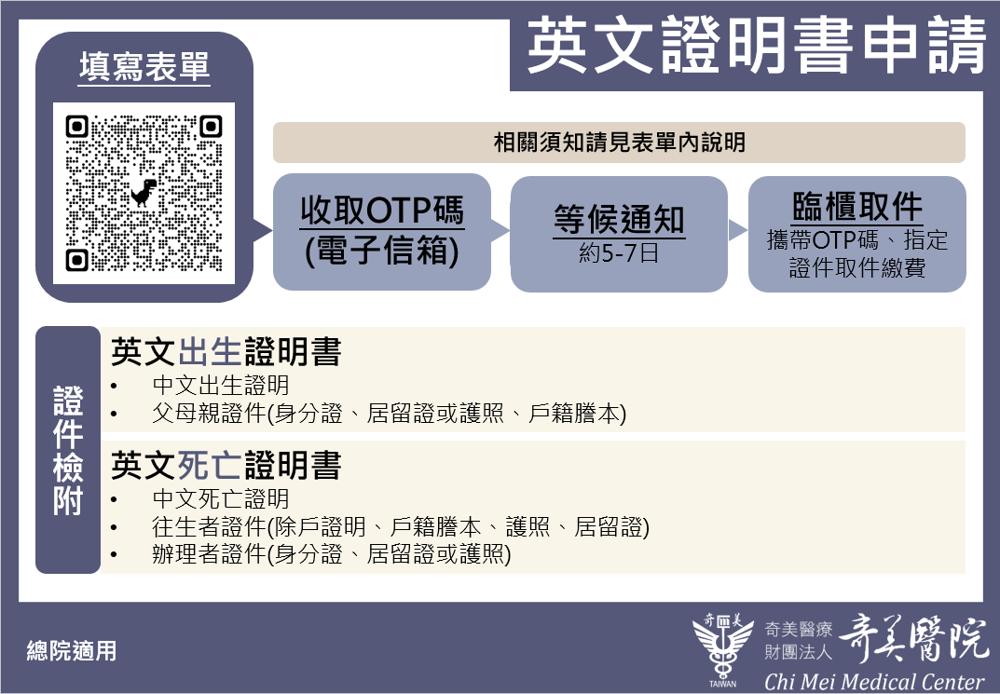
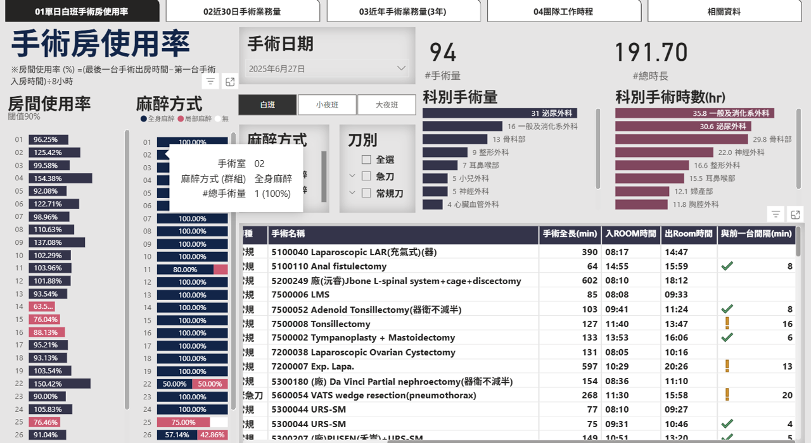
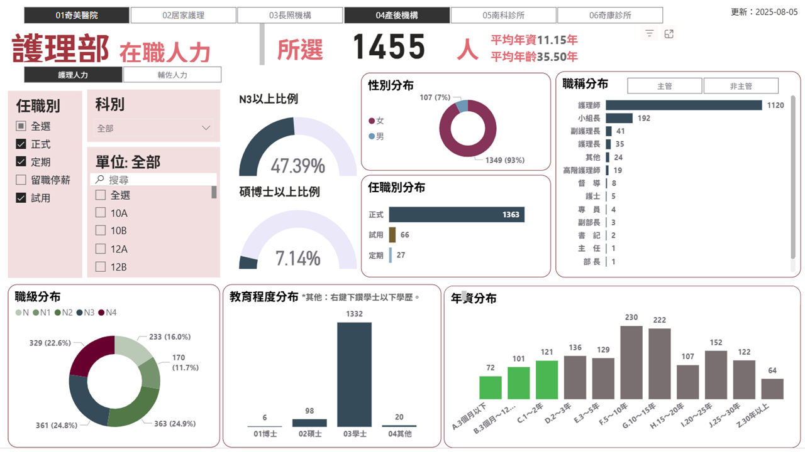
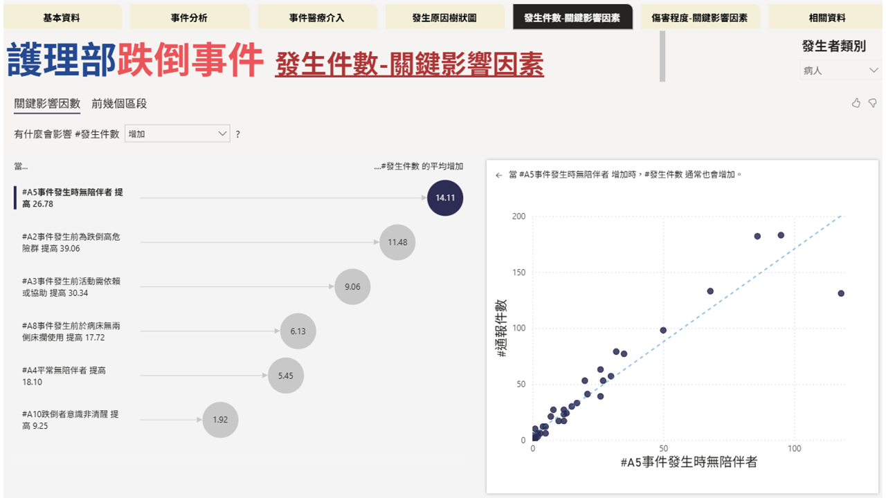

從醫療專業行政，走向風險評估與核保
黃聖凱
5年臨床照護｜新生兒・病嬰・成人心臟重症
8年醫療行政｜病歷判讀・診斷邏輯・醫療流程
希望職稱｜核保人員
黃聖凱
畢業於高雄醫學大學護理學系，具備12年臨床照護及醫療行政實務經驗，熟悉醫療流程、病歷資料及診斷文件判讀，個性負責任，與團隊協作配合度高。
過往工作中，我曾負責重大傷病案件與相關醫療文件審查，累積資料驗證、風險辨識及問題分析能力，並參與教育訓練管理、專案推動及流程改善工作，具備跨部門協調溝通與資訊整合經驗。
工作上我重視系統化思考與細節管理，善於透過數據分析及數位工具提升作業效率與品質。
期望結合醫療專業背景、風險評估思維及分析能力，投入保險核保領域發展，協助進行風險評估、案件審查及核保決策，創造兼顧專業與效率的服務價值。
醫療文件與診斷資料判讀、資料異常辨識與邏輯核核、醫療流程理解與風險控管，重視合規性。
Office（樞紐分析、標準化格式、VBA）、Power BI（數據分析、指標建構），善用 GAS 與 Gemini/Claude/ChatGPT 等 AI 工具。
8年醫療行政資歷，覆核重大傷病申請案件、判讀診斷書與醫療文件、檢核醫療費用與出院結帳資料正確性，確保資料合規。
5年新生兒、病嬰、成人心臟重症臨床照護經驗，理解診斷、治療與預後邏輯，奠定風險評估基礎。
2016/07 - 2019/02｜2年8個月
2019/03 - 2026/06｜7年4個月
從護理臨床轉任醫療行政，負責醫學教育訓練、住院醫師甄選、醫務管理等業務，並持續運用數位工具改善行政流程。
核心經歷
數位賦能
醫務行政
高雄醫學大學 護理學系
2009/9 - 2013/6｜大學畢業
高考護理師執照
考試院
CPR證照
中華民國紅十字會
GEPT 全民英檢中級
LTTC財團法人語言訓練測驗中心
Gemini Certified Educator
更多資格認證
中文
聽/說/讀/寫：精通
英文
聽/說/讀/寫：中等


分析手術室使用率、麻醉方式、術式手術量與趨勢，作為管理者資源分配依據。

分析護理單位人力分布，串接跨系統資料，作為多項分析的母本資料與評鑑介紹工具。

分析跌倒族群、情境與措施，利用關鍵影響因素及原因樹狀圖，作為品質監測與改善依據。
// AI HEADHUNTER SYSTEM //
// STATUS: ANALYZING PROFILE...
// TARGET: HUANG, SHENG-KAI